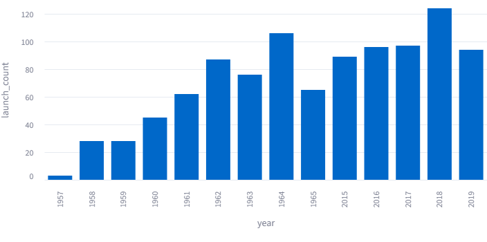
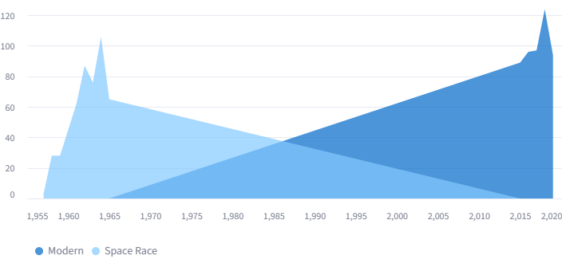

Evolution of Rocket Launch Reliability: A Comparative Analysis
Home | Tutorial | Function Reference | StreamLit App | Final Report
1 🚀 Rocket Launches: Space Race vs Commercial Age
1.1 Abstract
Some people are interested in aerospace but have not had the opportunity to explore trends due to the complexity of working with API-based data pipelines. This project was motivated by both an interest in rockets and a desire to simplify access to meaningful launch data. We developed a Python package that integrates web scraping, data engineering, machine learning, and visualization into a single analytical pipeline.
Using The Space Devs API, we collected and cleaned approximately 1000 rocket launch records, evenly split between the Space Race era and the modern commercial era. Our package automates the data collection and cleaning process, allowing users to immediately begin analysis without needing to interact with APIs directly.
We implemented a series of functions for exploratory data analysis and developed a logistic regression model to predict launch failure based on key features such as year, location, and rocket family. Our findings suggest that launch frequency has increased significantly in the modern era, and that reliability has improved over time.
This project provides a reusable framework for analyzing spaceflight trends and invites users to explore their own questions using the provided dataset and tools.
1.2 Introduction and Research Question
1.2.1 Motivation
Many people wonder whether the early Space Race demonstrated greater ambition and innovation, or whether modern commercial spaceflight represents a more advanced and capable era. We wanted to investigate how rocket launches have changed over time while also creating a tool that allows others to explore their own analytical questions.
1.2.2 Hypothesis
We expected to see a significant increase in the volume of launches during the modern era. With the rapid growth of private space companies, it appears that launches occur far more frequently today. However, it was also possible that the pioneers of national space programs achieved comparable or even greater launch intensity during the Space Race.
1.3 Data Collection and Wrangling
1.3.1 Data Source
We used The Space Devs API, which provides detailed and structured records of rocket launches. Its accessibility and well-documented endpoints made it an ideal source for building a reproducible dataset.
1.3.2 Data Cleaning
Most of the required cleaning involved restructuring and standardizing data formats. Several key transformations were applied:
- The
namecolumn was split intorocket_familyandmission
- A
yearcolumn was extracted from launch dates
- Country names were extracted from the
locationfield
- Launch outcomes were standardized into success and failure categories
- An
eracolumn was added to distinguish between Space Race and modern launches
These steps ensured the dataset was both structured and analytically useful.
1.3.3 Reproducibility
To make the project accessible and reusable, we developed a cleaning.py script that automates the entire data collection and cleaning process.
Designing functions that were intuitive and flexible required avoiding hard-coded values and maintaining consistent naming conventions. The result is a streamlined pipeline that allows users to regenerate the dataset with minimal effort.
1.4 Exploratory Data Analysis (EDA)
1.4.1 Visualization
Our Exploratory Data Analysis involved the investigation of secondary and tertiary analytical questions that go beyond: “Do we launch more rockets today, or did we launch more in the 60s-70s?” Among these was success rates, and a breakdown of launch frequency around the world over time. The question of success rate led to the creation of our machine learning algorithm. Our main visuals include Global Launch Activity and Annual Launch Volume by Era.
1.4.2 Narrative
In the first graph (Global Launch Activity) we see a bar chart which lays out how total launch frequency has increased from year 1 of space race to year 5 of modern era:

The second graph is a density chart which more clearly displays how launch volume changed for each rocket era:

These observations motivated the development of a predictive model to better understand launch success and failure patterns.
2 Methodology (Machine Learning Component)
To extend the analysis beyond descriptive trends, we implemented a predictive modeling approach to estimate the likelihood of launch failure. Because the outcome variable is binary (success vs. failure), we selected logistic regression as our primary modeling technique. This model is well-suited for classification problems and provides interpretable results, making it appropriate for understanding how different factors influence launch outcomes.
The response variable was derived from the status column, where: - "Launch Successful" was encoded as 0
- "Launch Failure" and "Launch was a Partial Failure" were encoded as 1
This allowed us to model the probability of a launch resulting in failure.
The logistic regression model estimates this probability using the following functional form:
\[ P(\text{Failure}) = \frac{1}{1 + e^{-(\beta_0 + \beta_1 \cdot \text{Year} + \beta_2 \cdot \text{Location} + \beta_3 \cdot \text{Rocket Family} + \cdots)}} \]
2.1 Feature Engineering
Several preprocessing and feature engineering steps were applied to prepare the data for modeling:
- Filtering Valid Outcomes: Only launches with clearly defined outcomes (successful, failed, or partial failure) were included.
- Categorical Encoding:
locationandrocket_familywere transformed using one-hot encoding (pd.get_dummies).
- Numerical Feature:
yearwas included to capture long-term trends.
- Handling Missing Data: Rows with missing values were removed prior to modeling.
The dataset was split into training and testing sets using an 80/20 split.
3 Results and Discussion
3.1 Model Performance
The model was evaluated using classification accuracy on the test dataset.
Accuracy: 83.50%
This indicates that the model captures meaningful—but incomplete—patterns in launch outcomes.
3.2 Key Findings
- Launch outcomes are partially predictable using year, location, and rocket family.
- More recent launches tend to have higher success rates, reflecting technological improvement.
- Rocket type and launch location contribute to differences in reliability.
- Although the dataset includes an
eravariable, it was not included in the model; however, theyearvariable still captures long-term historical trends.
These findings support the hypothesis that modern spaceflight is more reliable than during the Space Race era.
3.3 Limitations
- Dataset Size: Approximately 1000 records limits generalizability.
- Missing Features: No data on weather, cost, payload, or engineering complexity.
- Model Simplicity: Logistic regression may not capture nonlinear relationships.
- Era Not Modeled Directly: The
eravariable was not included as a feature.
4 Conclusion and Future Work
4.1 Final Summary
This project analyzed rocket launch data across historical and modern periods using data collected from The Space Devs API. After cleaning and structuring the dataset, we explored trends and implemented a logistic regression model to predict launch outcomes.
The results indicate that launch reliability has improved over time, reflecting advancements in technology and operational experience. While the model demonstrates that launch outcomes are somewhat predictable, it also highlights the complexity of factors influencing success.
4.2 Future Work
- Incorporate additional variables such as cost, weather, and payload
- Include the
eravariable directly in the model
- Use more advanced machine learning models (e.g., random forests)
- Expand the dataset beyond 1000 launches
- Enhance the Streamlit app with real-time data integration